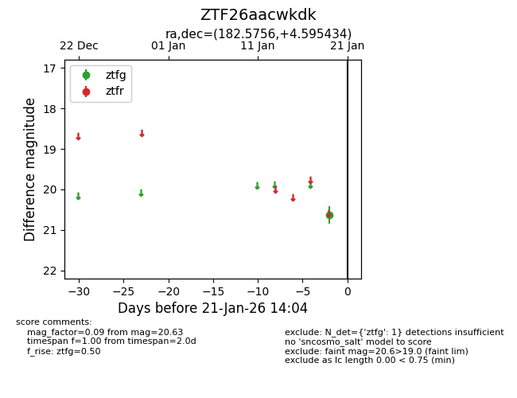
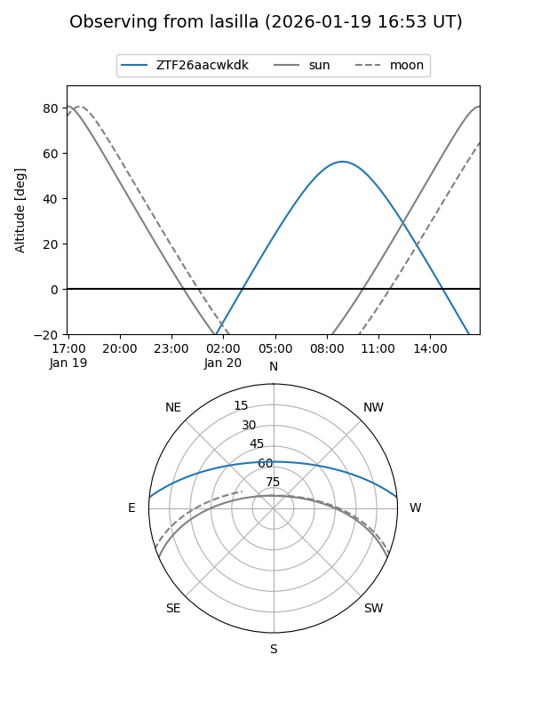
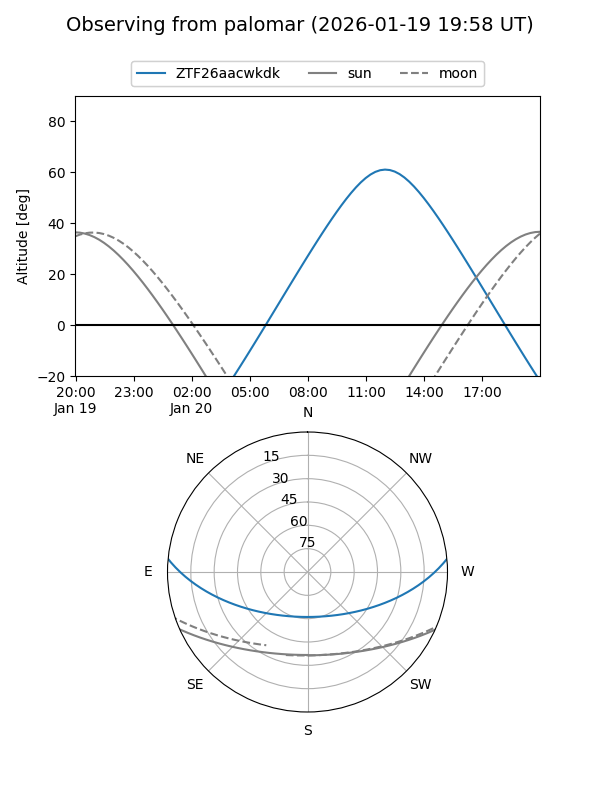

ZTF26aacwkdk
Target ZTF26aacwkdk at 2026-01-19 14:01
Aliases and brokers:
FINK: link
Lasair: link
ALeRCE: link
alt names
ZTF26aacwkdk (ztf,fink_ztf)
Coordinates:
equatorial (ra, dec) = 182.5756,+4.59543
equatorial (HMS+DMS) = 12:10:18.15,+04:35:43.56
galactic (l, b) = (277.5997,+65.42379)
Flags:
Photometry:
last ztfg=20.63
1 ztfg detections
Lightcurve

Visibility


Additional plots